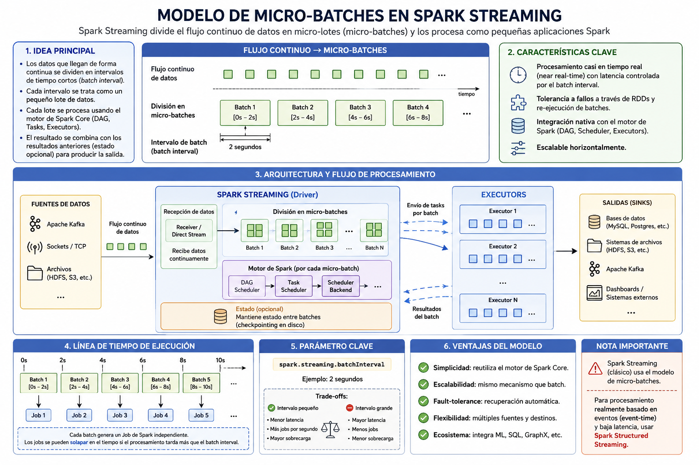

Spark Streaming
INTRODUCCIÓN
Spark Streaming fue la primera solución de procesamiento en tiempo real incorporada en Apache Spark. Permite procesar flujos continuos de datos mediante un modelo basado en micro-batches, extendiendo el paradigma de procesamiento batch distribuido hacia escenarios de baja latencia.
Aunque en versiones actuales se recomienda Structured Streaming, comprender Spark Streaming es importante desde una perspectiva histórica y arquitectónica.
Esta lección ayuda a diferenciar el modelo clásico basado en DStreams del modelo moderno basado en DataFrames. Esa comparación es útil para mantener aplicaciones heredadas y para entender por qué Structured Streaming simplifica la construcción de pipelines en tiempo real.
CONTENIDO
Modelo de Programación
DStream (Discretized Stream)La abstracción principal en Spark Streaming es el DStream, que representa una secuencia de RDDs generados a intervalos regulares.
Cada intervalo (por ejemplo, 5 segundos) genera un RDD que contiene los datos recibidos en ese periodo.
Por tanto, un DStream no almacena un flujo infinito como una estructura única, sino que lo
divide en una sucesión de RDDs. Cada RDD se procesa con las transformaciones habituales de
Spark Core, como map, filter o reduceByKey.
En lugar de procesar cada evento individualmente, Spark Streaming agrupa eventos en pequeños lotes temporales.
El intervalo de micro-batch determina el compromiso entre latencia y coste de procesamiento. Intervalos muy cortos reducen la latencia, pero incrementan la sobrecarga de planificación; intervalos más largos aumentan throughput, aunque los resultados tardan más en emitirse.

Figura 1: Modelo de micro-batches en Spark Streaming clásico
Spark Streaming frente a Structured Streaming
Spark Streaming clásico trabaja con DStreams y RDDs. Structured Streaming trabaja con DataFrames y considera el flujo como una tabla que se actualiza continuamente.
- Spark Streaming: API más cercana a RDD, útil para entender sistemas heredados.
- Structured Streaming: API declarativa, optimizada por Catalyst y mejor integrada con Spark SQL.
- Recomendación actual: usar Structured Streaming para nuevos desarrollos.
En proyectos reales es habitual encontrar ambos enfoques: aplicaciones antiguas con DStreams
y nuevos pipelines implementados con readStream y writeStream.
Arquitectura de ejecución
- Recepción de datos desde una fuente.
- Creación de RDD por intervalo.
- Aplicación de transformaciones.
- Ejecución distribuida en el clúster.
- Escritura de resultados.
El procesamiento sigue el modelo DAG habitual de Spark, pero aplicado a cada micro-batch.
El driver crea jobs periódicos según el intervalo definido. Los executors procesan las tareas de cada RDD y escriben los resultados en el destino configurado. Si un micro-batch tarda más que el intervalo de generación, el sistema empieza a acumular retraso.
Creación de una aplicación básica
import org.apache.spark._
import org.apache.spark.streaming._
val conf = new SparkConf().setAppName("StreamingApp").setMaster("local[2]")
val ssc = new StreamingContext(conf, Seconds(5))
val lines = ssc.socketTextStream("localhost", 9999)
val words = lines.flatMap(_.split(" "))
val pairs = words.map(word => (word, 1))
val counts = pairs.reduceByKey(_ + _)
counts.print()
ssc.start()
ssc.awaitTermination()En este ejemplo se abre un stream de texto desde un socket, se separan palabras y se calcula un conteo por micro-batch. Es una práctica útil para entender el ciclo de vida de una aplicación streaming: configuración, definición del flujo, inicio y espera de terminación.
Ciclo de vida de una aplicación Spark Streaming
- Crear la configuración Spark y el
StreamingContext. - Definir fuentes de entrada y transformaciones sobre DStreams.
- Definir acciones o salidas, como impresión, escritura en ficheros o envío a otro sistema.
- Ejecutar
start()para iniciar la recepción y planificación de micro-batches. - Mantener la aplicación activa con
awaitTermination(). - Detener el contexto de forma ordenada cuando termine el procesamiento.
Transformaciones en DStreams
- map
- flatMap
- filter
- reduceByKey
- join
- window
Las transformaciones aplicadas a DStreams se ejecutan internamente sobre los RDDs de cada micro-batch.
Transformaciones sin estado: Operan únicamente sobre los datos del micro-batch actual. Ejemplos: filtrar errores en logs, convertir formatos o extraer campos.
Transformaciones con estado: Necesitan recordar información entre micro-batches. Ejemplos: conteos acumulados por clave, sesiones de usuario o detección de patrones repetidos.
Ventanas temporales
Spark Streaming permite definir ventanas sobre múltiples micro-batches.
val windowedCounts = pairs.reduceByKeyAndWindow(
(a:Int, b:Int) => a + b,
Seconds(30),
Seconds(10)
)Este ejemplo calcula conteos sobre una ventana de 30 segundos actualizada cada 10 segundos.
Las ventanas permiten responder preguntas como “cuántos errores se han producido en los últimos 5 minutos” o “cuántos usuarios únicos han estado activos en el último minuto”. La duración de ventana y el intervalo de deslizamiento deben ser múltiplos del intervalo de micro-batch.
Gestión del estado
Se puede mantener estado entre micro-batches utilizando funciones como:
updateStateByKeymapWithState
El estado permite mantener acumulados por clave, pero también introduce riesgos: mayor consumo de memoria, necesidad de checkpointing y posibilidad de crecimiento indefinido si no se eliminan claves antiguas.
# Ejemplo conceptual: mantener conteo acumulado por clave
def update_count(new_values, current_state):
return sum(new_values) + (current_state or 0)Fuentes soportadas
- Socket
- Kafka
- Flume
- Archivos
- HDFS
En el modelo clásico, algunas fuentes utilizan receivers, procesos que reciben datos y los almacenan temporalmente antes de que Spark los procese. En integraciones modernas con Kafka se prefiere un consumo directo basado en offsets.
Checkpointing
Para tolerancia a fallos y recuperación de estado, es necesario habilitar checkpointing.
ssc.checkpoint("/ruta/checkpoint")El checkpoint debe ubicarse en almacenamiento fiable, como HDFS o un sistema distribuido, no en un directorio temporal local. Es especialmente importante cuando se usan operaciones con estado.
Receivers, WAL y tolerancia a fallos
En fuentes basadas en receivers, Spark puede utilizar Write-Ahead Logs (WAL) para registrar los datos recibidos antes de procesarlos. Esto reduce el riesgo de pérdida si falla un executor, aunque añade coste de escritura.
- Sin WAL: menor latencia, pero más riesgo ante fallos.
- Con WAL: mayor fiabilidad, a cambio de más E/S.
- Fuentes directas: suelen apoyarse en offsets del sistema externo.
Monitorización básica
Para evaluar una aplicación Spark Streaming conviene observar:
- Tiempo de procesamiento de cada micro-batch.
- Retraso acumulado si el procesamiento tarda más que el intervalo configurado.
- Número de registros recibidos y procesados por segundo.
- Uso de memoria cuando existen operaciones con estado.
- Errores de conexión con fuentes externas.
Ventajas
- Integración directa con el ecosistema Spark.
- Modelo sencillo basado en RDD.
- Escalabilidad horizontal.
Limitaciones
- Basado en RDD, menor optimización que DataFrames.
- Mayor latencia comparado con sistemas puramente event-driven.
- Menor integración con Spark SQL.
- Modelo menos declarativo que Structured Streaming.
- Mayor complejidad en pipelines con esquemas, ventanas y sinks transaccionales.
Casos de uso
- Procesamiento de logs.
- Monitorización básica.
- Prototipos de streaming.
- Mantenimiento de aplicaciones heredadas basadas en DStreams.
- Aprendizaje del modelo micro-batch antes de pasar a Structured Streaming.
Buenas prácticas
- Usar Structured Streaming para nuevos desarrollos salvo que exista una restricción clara.
- Ajustar el intervalo de micro-batch según latencia y capacidad real del clúster.
- Activar checkpointing en operaciones con estado.
- Evitar lógica pesada o bloqueante dentro de cada micro-batch.
- Monitorizar retraso de procesamiento y crecimiento del estado.
CONCLUSIÓN
Spark Streaming permitió extender el modelo batch de Spark hacia el procesamiento en tiempo real mediante micro-batches y DStreams.
Aunque hoy Structured Streaming es la solución recomendada, Spark Streaming constituye un paso fundamental en la evolución del procesamiento distribuido de datos en tiempo real.
EJERCICIO RESUELTO
Contar palabras con Spark Streaming clásico
En este ejercicio se construye una aplicación sencilla con Spark Streaming clásico. El objetivo es procesar líneas de texto recibidas por un socket y contar las palabras que aparecen en cada micro-batch.
Objetivos del ejercicio
- Crear un
StreamingContext. - Recibir datos desde un socket.
- Transformar cada línea en palabras.
- Contar las palabras dentro de cada micro-batch.
- Mostrar el resultado por consola.
Paso 1. Abrir una terminal de entrada
Antes de ejecutar Spark, abre una terminal y lanza un servidor de texto con
nc:
nc -lk 9999Todo lo que escribas en esta terminal será enviado al programa de Spark Streaming.
Paso 2. Código resuelto en PySpark
from pyspark import SparkConf
from pyspark.streaming import StreamingContext
conf = (SparkConf()
.setAppName("SparkStreamingWordCount")
.setMaster("local[2]"))
ssc = StreamingContext(conf, 5)
lineas = ssc.socketTextStream("localhost", 9999)
palabras = lineas.flatMap(lambda linea: linea.split(" "))
pares = palabras.map(lambda palabra: (palabra, 1))
conteo = pares.reduceByKey(lambda a, b: a + b)
conteo.pprint()
ssc.start()
ssc.awaitTermination()Paso 3. Probar el programa
En la terminal donde está ejecutándose nc, escribe varias líneas:
spark kafka spark
streaming spark
big data streamingResultado esperado
Cada 5 segundos Spark generará un micro-batch y mostrará el conteo de palabras recibidas en ese intervalo.
-------------------------------------------
Time: 2026-07-03 11:30:05
-------------------------------------------
('spark', 2)
('kafka', 1)
-------------------------------------------
Time: 2026-07-03 11:30:10
-------------------------------------------
('streaming', 1)
('spark', 1)Explicación paso a paso
La aplicación crea un StreamingContext con un intervalo de micro-batch
de 5 segundos. Esto significa que Spark agrupa los datos recibidos durante ese periodo
y los procesa como un pequeño lote.
El método socketTextStream crea un DStream a partir de las líneas de texto
recibidas por el puerto 9999. Internamente, ese DStream se representa como una secuencia
de RDDs.
Las transformaciones flatMap, map y reduceByKey
se aplican sobre cada RDD generado en cada micro-batch.
Finalmente, pprint() muestra por consola el resultado de cada intervalo.
La aplicación no finaliza automáticamente, ya que queda esperando nuevos datos con
awaitTermination().
Relación con la lección
Este ejercicio muestra el funcionamiento básico de Spark Streaming clásico: los datos no se procesan evento a evento, sino agrupados en micro-batches.
También permite observar la diferencia con Structured Streaming. En este caso no se
trabaja con DataFrames ni con readStream, sino con DStreams y operaciones
similares a las utilizadas sobre RDDs.
Preguntas de reflexión
- ¿Qué representa el intervalo de 5 segundos definido en el
StreamingContext? - ¿Qué diferencia hay entre un DStream y un DataFrame de Structured Streaming?
- ¿Por qué se usa
local[2]en lugar delocal[1]? - ¿Qué ocurre si no se escribe nada en la terminal de
nc? - ¿Por qué Spark Streaming clásico se considera hoy una tecnología heredada?